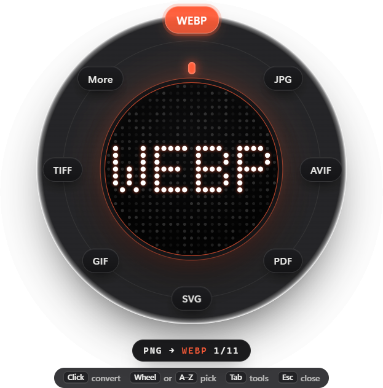
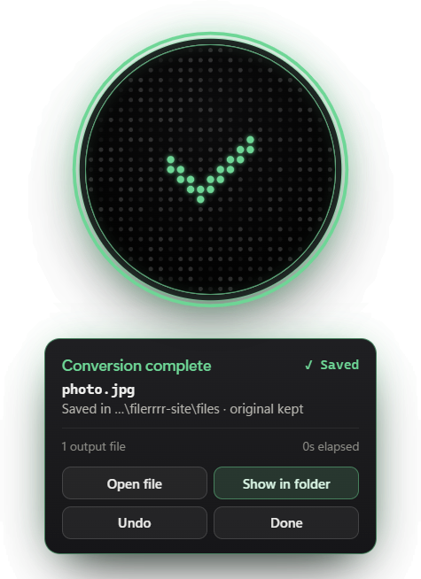

Convert files right where they are.
Hold Ctrl, drag a file, pick a format. Filerrrr converts it on your PC at best quality and saves it next to the original. Nothing is uploaded.

Three moves. No windows to open.
The palette appears at your cursor with only the formats that fit your file.
Hold Ctrl and drag
Start dragging any file in File Explorer with Ctrl held. Or right-click → Convert with Filerrrr.
Aim at a format
Point at JPG, PDF, MP3… or scroll the wheel, or type the first letters. Tab flips to tools like resize and compress.
Let go
The new file appears next to the original. The result card tells you where, and Undo is one click away.

Careful with your files.
Converting should never cost you anything you had.
- Originals stay untouched. Results get their own name; nothing is overwritten unless you choose that.
- Undo for 30 seconds. Sends the new files to the Recycle Bin.
- Best quality by default. Lossless WEBP from screenshots, full-colour JPG, 320 kbps audio, 300 dpi PDF pages.
- Clear results. Every conversion says where the file went, with taskbar progress and a notification.
- Private. No account, no upload, no tracking. Works with the internet switched off.
Everyday formats, done well.
Images, documents and data work the moment it's installed.
Images
Photos, screenshots, iPhone HEIC, Photoshop files and icons.
Documents & PDF
Turn PDFs into editable files and documents into PDFs; merge, split, number pages.
Video & audio
Convert, compress to 720p, trim, extract the sound, normalise loudness.
Spreadsheets & data
Between tables and data formats, with sheets kept apart.
Archives & fonts
Pack into ZIP, unpack archives, convert web fonts.
Your own presets
Save a recipe (format, width, name, folder) and run it from the palette, or point a watch folder at it.
Install only what you need.
Three larger engines are optional. Pick them during setup or later in Settings. They download from their official sources and are checked byte for byte before use.
| Engine | Download | Adds |
|---|---|---|
| Video & audio | 28 MB | All video and audio conversions (FFmpeg). Already have FFmpeg? Filerrrr uses it. optional |
| PDF pages & Photoshop | 15 MB | PDF pages as JPG or PNG, and PSD files. optional |
| Scanned text recognition | 29 MB | Reads text from scans and photos of documents (English). optional |
Questions
Windows says "unknown publisher". Is it safe?
Filerrrr isn't code-signed, so Windows SmartScreen shows a warning the first time. Click More info → Run anyway. The installer's SHA256 checksum is published next to every download, and the full source code is on GitHub.
Does it upload my files?
No. Everything runs on your PC. The only time Filerrrr goes online is when you choose to download an optional engine.
What does it cost?
Nothing. Filerrrr is free and open source under the MIT licence.
How do I update?
Download the newest Setup from the releases page and run it. Your settings, history and engines are kept, and a short "What's new" appears after updating.
Does it work on Mac or Linux?
Not yet. Filerrrr is for Windows 10 and 11 (64-bit).